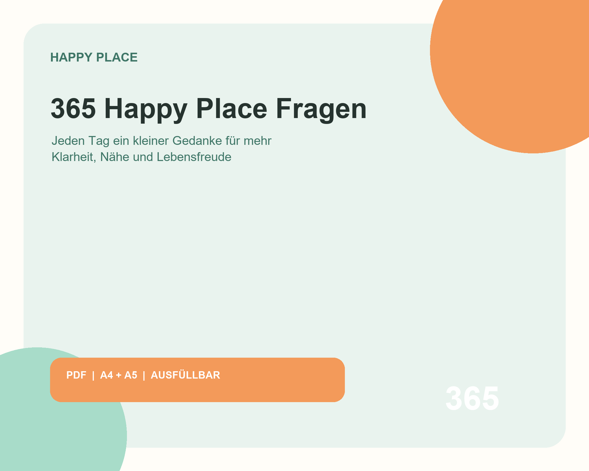
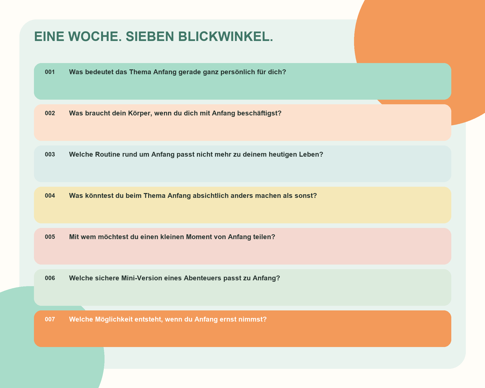

Mehr Klarheit
Du musst nicht mehr vor einer leeren Journaling-Seite sitzen. Eine konkrete Frage hilft dir beim Anfangen.
Das Happy-Place-Signature-Produkt
Für Tage, an denen dir die richtigen Worte fehlen. Für Gespräche, die tiefer gehen. Und für kleine Momente, in denen du wieder bei dir ankommst.

Nicht noch eine Aufgabe
Du musst nicht mehr vor einer leeren Journaling-Seite sitzen. Eine konkrete Frage hilft dir beim Anfangen.
Nutze ausgewählte Fragen mit deinem Partner, Freunden oder deiner Familie für Gespräche jenseits des Smalltalks.
Ein kurzer Impuls pro Tag genügt, um Gewohntes anders zu betrachten und bewusster zu entscheiden.
Sieben Lebensbereiche
Du musst nicht jede Frage sofort beantworten. Manchmal ist eine gute Frage schon der Anfang einer Veränderung.
Was in deinem Leben fühlt sich gerade wirklich nach dir an?
Welche kleine Entscheidung würde deinen Alltag leichter machen?
Wem würdest du gern etwas sagen, das bisher unausgesprochen blieb?
Welche Stärke übersiehst du bei dir selbst am häufigsten?

Ein Jahr. Dein Tempo.
So passt es in dein Leben
Wähle morgens oder abends eine Frage und notiere, was spontan auftaucht.
Nimm dir am Wochenende sieben Perspektiven vor und erkenne Zusammenhänge.
Wählt gemeinsam eine Frage und hört einander zu, ohne sofort Lösungen zu suchen.
Gut zu wissen
Damit du vor dem Kauf genau weißt, was dich erwartet.
Nein. Du erhältst einen digitalen Download über Etsy. Es wird kein Produkt per Post versendet.
Du erhältst 365 Fragen als druckbares PDF in A4 und A5 sowie als digital ausfüllbares A4-PDF – inklusive kurzer Anleitung.
Ja. Du kannst die Druckversion in A4 oder A5 verwenden oder das ausfüllbare PDF direkt am Gerät bearbeiten.
Für dich, wenn du beim Journaling einen Einstieg suchst, dir mehr Klarheit wünschst oder Gespräche jenseits von Smalltalk anstoßen möchtest.
Wähle täglich eine Frage für einen kurzen Check-in, nimm dir pro Woche sieben Perspektiven vor oder nutze einzelne Fragen gemeinsam mit Menschen, die dir wichtig sind.
Deine erste Frage wartet
365 Happy Place Fragen begleitet dich ein Jahr lang – ohne Perfektionsdruck und in deinem eigenen Tempo.
PDF für 10,00 € bei Etsy kaufenDigitales Produkt · sofort verfügbar · kein physischer Versand